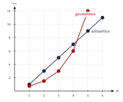
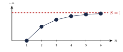

Capítulo 49
Sucesiones y series
IPN CENEVAL
Una sucesión es una lista ordenada de números que sigue una regla.
Una serie es la suma de los términos de una sucesión.
En este capítulo aprenderás a:
- encontrar términos de una sucesión;
- reconocer sucesiones aritméticas y geométricas;
- calcular sumas finitas;
- determinar si una serie geométrica infinita converge;
- utilizar la notación sigma.
49.1 Sucesiones#
Una sucesión es una lista ordenada de números:
El número \(a_n\) se llama término general o término en la posición \(n\).
Una sucesión puede definirse mediante una fórmula explícita:
donde:
Escribe los primeros cinco términos de:
Ver solución
Sustituimos:
Por tanto, la sucesión es:
Encuentra una fórmula para la sucesión:
Ver solución
Cada término aumenta en:
La sucesión puede escribirse como:
Verificamos:
Por tanto:
49.2 Sucesiones recursivas#
Una sucesión también puede definirse a partir de sus términos anteriores.
Por ejemplo:
Esta regla produce:
Una fórmula explícita permite calcular directamente cualquier término.
Una fórmula recursiva requiere conocer uno o más términos anteriores.
49.3 Sucesiones aritméticas#
Una sucesión es aritmética si la diferencia entre términos consecutivos es constante.
Esta constante se llama diferencia común y se representa mediante:
La diferencia común se calcula con:
Por ejemplo, en:
se cumple:
Por tanto:
49.3.1 Término general#
Si el primer término es \(a_1\) y la diferencia común es \(d\), entonces:
49.3.2 Suma de los primeros términos#
La suma de los primeros \(n\) términos es:
También puede utilizarse:
En la sucesión:
calcula:
y:
Ver solución
Identificamos:
Calculamos el término número \(20\):
Por tanto:
Ahora calculamos la suma:
Por tanto:
La suma de los primeros \(10\) términos de una sucesión aritmética es:
Además:
Encuentra la diferencia común.
Ver solución
Utilizamos:
Sustituimos:
Dividimos entre \(5\):
Por tanto:
49.4 Sucesiones geométricas#
Una sucesión es geométrica si el cociente entre términos consecutivos es constante.
Esta constante se llama razón común y se representa mediante:
La razón se calcula con:
siempre que:
Por ejemplo, en:
se cumple:
Por tanto:
49.4.1 Término general#
Si el primer término es \(a_1\) y la razón común es \(r\), entonces:
49.4.2 Suma de los primeros términos#
Si:
entonces:
Equivalentemente:
Si:
entonces:
En la sucesión:
calcula:
y:
Ver solución
Identificamos:
Calculamos el término número \(8\):
Por tanto:
Ahora calculamos la suma:
Por tanto:
En una sucesión geométrica:
y:
Encuentra \(a_1\) y \(r\).
Ver solución
Utilizamos:
Entonces:
y:
Dividimos las ecuaciones:
Por tanto:
Sustituimos en:
Por tanto:
49.5 Aritmética o geométrica#
| Característica | Aritmética | Geométrica |
|---|---|---|
| Operación repetida | Sumar \(d\) | Multiplicar por \(r\) |
| Relación | \(a_{n+1}-a_n=d\) | \(\dfrac{a_{n+1}}{a_n}=r\) |
| Término general | \(a_1+(n-1)d\) | \(a_1r^{n-1}\) |
| Cambio | Lineal | Exponencial |

En una sucesión aritmética se busca una diferencia constante.
En una sucesión geométrica se busca una razón constante.
49.6 Series finitas#
Una serie es la suma de los términos de una sucesión.
Por ejemplo, si:
la suma de los primeros cuatro términos es:
Por tanto:
Se utiliza la notación:
Una sucesión es una lista de términos.
Una serie es la suma de esos términos.
49.7 Series geométricas infinitas#
Una serie infinita tiene la forma:
o:
Una serie converge si sus sumas parciales se aproximan a un número finito.
Si no se aproximan a un número finito, la serie diverge.
Para una serie geométrica:
se cumple:
si:
Si:
la serie geométrica diverge.
| Condición | Comportamiento |
|---|---|
| \(|r|<1\) | La serie converge |
| \(|r|\geq1\) | La serie diverge |
Calcula:
Ver solución
Es una serie geométrica con:
y:
Como:
la serie converge.
Aplicamos:
Por tanto:
Determina si converge:
Ver solución
Identificamos:
y:
Como:
la serie converge.
Calculamos:
Por tanto:
Determina si converge:
Ver solución
La razón es:
Como:
la serie diverge.
49.8 Sumas parciales#
La suma parcial número \(n\) es:
Una serie infinita converge a \(S\) si:
cuando:
Para la serie:
las primeras sumas parciales son:
Estos valores se aproximan a:

49.9 Notación sigma#
La letra griega sigma mayúscula:
se utiliza para representar sumas.
La expresión:
significa:
En:
se tiene:
- \(k\): índice de la suma;
- \(1\): valor inicial;
- \(n\): valor final;
- \(a_k\): término que se suma.
Desarrolla:
Ver solución
Sustituimos:
Por tanto:
49.10 Propiedades de las sumatorias#
Si \(c\) es una constante:
Además:
Para sumas y restas:
Las fórmulas básicas son:
También:
Calcula:
Ver solución
Separamos la suma:
Aplicamos las fórmulas:
Por tanto:
Calcula:
Ver solución
Separamos:
Aplicamos las fórmulas:
Por tanto:
49.11 Aplicaciones de las sucesiones#
49.11.1 Crecimiento lineal#
Si una cantidad aumenta siempre en la misma cantidad, puede modelarse mediante una sucesión aritmética.
Una persona ahorra:
el primer mes y aumenta su ahorro mensual en:
cada mes.
¿Cuánto ahorra durante el mes número \(12\)?
Ver solución
Es una sucesión aritmética con:
y:
Entonces:
Por tanto:
49.11.2 Crecimiento geométrico#
Si una cantidad se multiplica siempre por el mismo factor, puede modelarse mediante una sucesión geométrica.
Una población inicial de bacterias es:
La población se duplica cada hora.
¿Cuántas bacterias habrá después de \(6\) horas?
Ver solución
Si el valor inicial corresponde a la hora \(0\), entonces:
Después de \(6\) horas:
Por tanto:
En problemas de crecimiento debe identificarse con cuidado si el valor inicial corresponde a:
o a:
Esto modifica el exponente.
49.12 Procedimiento rápido#
Para identificar el tipo de sucesión#
- Calcula las diferencias entre términos consecutivos.
- Si las diferencias son constantes, la sucesión es aritmética.
- Si no lo son, calcula los cocientes.
- Si los cocientes son constantes, la sucesión es geométrica.
Sucesión aritmética#
- Identifica: \[a_1,\quad d,\quad n.\]
- Calcula: \[a_n=a_1+(n-1)d.\]
- Si se solicita la suma, utiliza: \[S_n=\frac{n}{2}(a_1+a_n).\]
Sucesión geométrica#
- Identifica: \[a_1,\quad r,\quad n.\]
- Calcula: \[a_n=a_1r^{n-1}.\]
- Si se solicita la suma, utiliza: \[S_n = a_1\frac{1-r^n}{1-r}.\]
Serie geométrica infinita#
- Identifica: \[a_1 \qquad\text{y}\qquad r.\]
- Verifica si: \[|r|<1.\]
- Si converge, calcula: \[S=\frac{a_1}{1-r}.\]
49.13 Resumen#
Sucesión aritmética:
Suma aritmética:
Sucesión geométrica:
Suma geométrica finita:
Suma geométrica infinita:
Sumas básicas:
49.14 Errores frecuentes#
Recuerda:
- Una sucesión es una lista y una serie es una suma.
- En una sucesión aritmética se calcula una diferencia.
- En una sucesión geométrica se calcula un cociente.
- El término general utiliza: \[n-1,\] no solamente \(n\).
- La diferencia común puede ser negativa.
- La razón común puede ser negativa o fraccionaria.
- Las dos fórmulas de la suma geométrica son equivalentes, pero no deben mezclarse sus signos.
- Una serie geométrica infinita solo converge cuando: \[|r|<1.\]
- Si: \[|r|\geq1,\] no puede utilizarse la fórmula de suma infinita.
- En la notación sigma deben revisarse los límites inferior y superior.
- En problemas aplicados debe identificarse si el conteo comienza en \(n=0\) o en \(n=1\).
49.15 Ejercicios propuestos#
Escribe los primeros cinco términos de:
Ver solución
Sustituyendo \(n=1, 2, 3, 4, 5\) en \(a_n=3n-2\): \[a_1 = 1,\quad a_2 = 4,\quad a_3 = 7,\quad a_4 = 10,\quad a_5 = 13.\]
Encuentra el término general de:
Ver solución
La diferencia común es \(d = 5\) y \(a_1 = 6\), entonces \[a_n = 6 + (n - 1)(5) = 5n + 1.\]
Determina si la sucesión es aritmética o geométrica:
Ver solución
El cociente entre términos consecutivos es constante (\(6/2 = 3\), \(18/6=3\)). Por lo tanto, la sucesión es geométrica con razón \(r=3\).
En una sucesión aritmética:
y:
Calcula:
y:
Ver solución
\[a_{15} = 4 + (15 - 1)(5) = 4 + 70 = 74.\] \[S_{15} = \frac{15}{2}(4 + 74) = \frac{15 \cdot 78}{2} = 585.\]
En una sucesión aritmética:
y:
Encuentra la diferencia común.
Ver solución
Con \(S_8 = 100\), \(a_1 = 2\) y \(n = 8\): \[100 = \frac{8}{2}\left[ 2(2) + 7d \right] = 4(4 + 7d).\] \[25 = 4 + 7d \implies 7d = 21 \implies d = 3.\]
En una sucesión geométrica:
y:
Calcula:
y:
Ver solución
\[a_6 = 5 \cdot 3^{5} = 5 \cdot 243 = 1215.\] \[S_6 = 5 \cdot \frac{3^6 - 1}{3 - 1} = 5 \cdot \frac{728}{2} = 5 \cdot 364 = 1820.\]
El segundo término de una sucesión geométrica es:
y el quinto término es:
Encuentra \(a_1\) y \(r\).
Ver solución
\(a_2 = a_1 r = 6\) y \(a_5 = a_1 r^4 = 162\). Dividiendo: \[\frac{a_1 r^4}{a_1 r} = \frac{162}{6} \implies r^3 = 27 \implies r = 3.\] De \(a_1 r = 6\): \(a_1 (3) = 6 \implies a_1 = 2\).
Calcula la suma de la serie infinita:
Ver solución
\(a_1 = 4\) y \(r = \dfrac{1}{2}\). Como \(|r| < 1\): \[S = \frac{4}{1 - 1/2} = \frac{4}{1/2} = 8.\]
Determina si converge:
Si converge, calcula su suma.
Ver solución
\(a_1 = 5\) y \(r = 0.8\). Como \(|r| < 1\), la serie converge: \[S = \frac{5}{1 - 0.8} = \frac{5}{0.2} = 25.\]
Determina si converge:
Ver solución
La razón es \(r=2\). Como \(|r| \geq 1\), la serie diverge.
Calcula:
Ver solución
Calcula:
Ver solución
\[\sum_{k=1}^{5} k^2 = \frac{5 \cdot 6 \cdot 11}{6} = 55, \qquad \sum_{k=1}^{5} 2k = 2 \cdot \frac{5 \cdot 6}{2} = 30.\] \[\sum_{k=1}^{5}(k^2 + 2k) = 55 + 30 = 85.\]
Una persona deposita \(\$500\) el primer mes y aumenta su depósito mensual en \(\$100\).
Calcula el depósito del mes número \(10\) y el total depositado durante los primeros \(10\) meses.
Ver solución
Es una sucesión aritmética con \(a_1 = 500\) y \(d = 100\). \[a_{10} = 500 + 9(100) = 1400.\] \[S_{10} = \frac{10}{2}(500 + 1400) = 5(1900) = 9500.\] El depósito del mes 10 es $1,400 y el total depositado es $9,500.
Una población inicial de \(200\) bacterias se triplica cada hora.
Calcula la población después de \(5\) horas.
Ver solución
La población inicial es de 200 y se triplica cada hora (\(r=3\)). Después de 5 horas: \[200 \cdot 3^5 = 200(243) = 48{,}600 \text{ bacterias}.\]